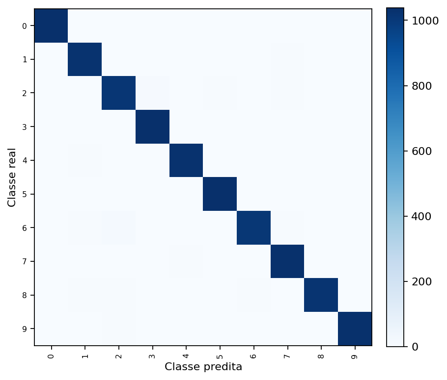
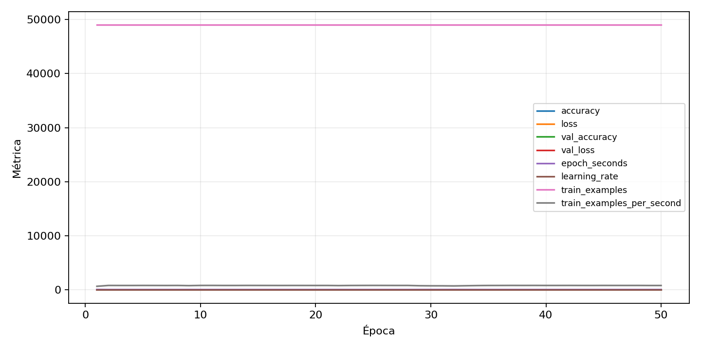

| n_samples | 10500 |
|---|---|
| loss | 0.12144479900598526 |
| accuracy | 0.9780952380952381 |
| balanced_accuracy | 0.9780952380952381 |
| macro_f1 | 0.9780822783036976 |


| Índice | Classe | Suporte | Precisão | Recall | F1 |
|---|---|---|---|---|---|
| 0 | 0 | 1050 | 0.9820245979186376 | 0.9885714285714285 | 0.9852871381110583 |
| 1 | 1 | 1050 | 0.9762131303520457 | 0.9771428571428571 | 0.9766777724892908 |
| 2 | 2 | 1050 | 0.9702495201535508 | 0.9628571428571429 | 0.9665391969407265 |
| 3 | 3 | 1050 | 0.9728464419475655 | 0.9895238095238095 | 0.9811142587346553 |
| 4 | 4 | 1050 | 0.9753320683111955 | 0.979047619047619 | 0.9771863117870723 |
| 5 | 5 | 1050 | 0.9754948162111216 | 0.9857142857142858 | 0.9805779251539554 |
| 6 | 6 | 1050 | 0.9805636540330418 | 0.960952380952381 | 0.9706589706589707 |
| 7 | 7 | 1050 | 0.9708097928436912 | 0.981904761904762 | 0.9763257575757575 |
| 8 | 8 | 1050 | 0.9893307468477207 | 0.9714285714285714 | 0.980297933685728 |
| 9 | 9 | 1050 | 0.9885167464114832 | 0.9838095238095238 | 0.9861575178997612 |
{"adapter":"kmnist","balance_mode":"all_raw","class_names":["0","1","2","3","4","5","6","7","8","9"],"dataset":"kmnist","dataset_options":{},"dataset_root":"/home/msduda/datasets-tcc/kmnist","native_channels":1,"normalization":"unit_interval","num_classes":10,"protocol":{"checkpoint_monitor":"val_macro_f1","dtype_policy":"mixed_float16","early_stopping":{"patience":50,"restore_best_weights":true},"evaluation_augmentation":false,"input_channels":"native","optimizer":"Adam","pretrained_weights":false,"reduce_lr_on_plateau":{"factor":0.3,"min_lr":1e-07,"patience":50},"resize":"proportional_padding","test_time_augmentation":false,"training_from_scratch":true},"seed":42,"source_fingerprint":"8928d478d8d23938a73b4f4a92c407bf3d74beff1e0e67e3644d6ecdc30cf828","source_manifest":{"class_names":["0","1","2","3","4","5","6","7","8","9"],"joined_samples":70000,"metadata":{"layout":"kmnist-component-npz"},"name":"kmnist","native_channels":1,"source_path":"/home/msduda/datasets-tcc/kmnist","splits":{"test":10000,"train":60000},"target_size":64},"target_size":64,"test_fraction":0.15,"train_fraction":0.7,"training":{"augmentation":{"brightness_delta":0.0,"contrast_lower":1.0,"contrast_upper":1.0,"cutout_max_frac":0.0,"cutout_prob":0.0,"flip_lr":false,"noise_std":0.0,"translate_frac":0.0,"zoom_max":1.0,"zoom_min":1.0},"batch_size":160,"default_image_size":64,"dtype_policy":"mixed_float16","early_stopping_patience":50,"extra_fraction":0.0,"image_size_overrides":{"gtsrb":128},"keras_verbose":1,"learning_rate":0.0003,"max_epochs":50,"preprocess_cache_max_mib":0,"reduce_lr_factor":0.3,"reduce_lr_min_lr":1e-07,"reduce_lr_patience":50,"shuffle_buffer_max_mib":0},"validation_fraction":0.15}
{"epochs_completed":50,"epochs_recorded":50,"evaluation_seconds":23.867692866999278,"fit_seconds_current_attempt":3696.263721613999,"max_epoch_seconds":74.18033135699807,"max_epochs":50,"mean_epoch_seconds":61.04721233593998,"mean_train_examples_per_second":803.7921248773152,"median_train_examples_per_second":813.5757814260207,"min_epoch_seconds":59.586565679997875,"selected_checkpoint":"/mnt/e/tcc-benchmark/outputs/kmnist-alldata-noaug-batch-sweep-2026-08-06/batch-160/kmnist/runs/kmnist__unit_interval__all_raw__seed-42/checkpoints/best.keras","total_seconds":3052.3606167969992,"training_seconds":3052.3606167969992,"wall_seconds_current_attempt":3723.683813992}
{"elapsed_seconds":3723.7332502200006,"event_counts":{"data_preparation_end":1,"data_preparation_start":1,"epoch_end":50,"evaluation_end":1,"evaluation_start":1,"fit_end":1,"fit_start":1,"periodic":735,"run_completed":1,"train_start":1},"generated_at":"2026-08-07T11:12:22.009+00:00","gpu_backend":"pynvml","interval_seconds":5.0,"metrics":{"cpu_percent":{"count":793,"max":17.1,"mean":12.851197982345523,"min":0.0,"p50":12.3,"p95":16.6},"disk_data_free_bytes":{"count":793,"max":998271299584.0,"mean":998271236522.1287,"min":998271229952.0,"p50":998271238144.0,"p95":998271238144.0},"disk_data_percent":{"count":793,"max":2.7,"mean":2.7000000000000006,"min":2.7,"p50":2.7,"p95":2.7},"disk_data_total_bytes":{"count":793,"max":1081101176832.0,"mean":1081101176832.0,"min":1081101176832.0,"p50":1081101176832.0,"p95":1081101176832.0},"disk_data_used_bytes":{"count":793,"max":27837591552.0,"mean":27837584981.871376,"min":27837521920.0,"p50":27837583360.0,"p95":27837587456.0},"disk_output_free_bytes":{"count":793,"max":207326765056.0,"mean":207313842289.6343,"min":207312809984.0,"p50":207313707008.0,"p95":207313993728.0},"disk_output_percent":{"count":793,"max":79.3,"mean":79.3,"min":79.3,"p50":79.3,"p95":79.3},"disk_output_total_bytes":{"count":793,"max":1000186310656.0,"mean":1000186310656.0,"min":1000186310656.0,"p50":1000186310656.0,"p95":1000186310656.0},"disk_output_used_bytes":{"count":793,"max":792873500672.0,"mean":792872468366.3657,"min":792859545600.0,"p50":792872603648.0,"p95":792873410560.0},"elapsed_seconds":{"count":793,"max":3723.677519,"mean":1865.859930484237,"min":0.024632,"p50":1863.822946,"p95":3553.7004684},"gpu_count":{"count":793,"max":1.0,"mean":1.0,"min":1.0,"p50":1.0,"p95":1.0},"gpu_memory_percent":{"count":793,"max":34.79275703430176,"mean":34.55266020487416,"min":30.050373077392578,"p50":34.56559181213379,"p95":34.70444679260254},"gpu_memory_total_bytes":{"count":793,"max":8589934592.0,"mean":8589934592.0,"min":8589934592.0,"p50":8589934592.0,"p95":8589934592.0},"gpu_memory_used_bytes":{"count":793,"max":2988675072.0,"mean":2968050911.394704,"min":2581307392.0,"p50":2969161728.0,"p95":2981089280.0},"gpu_temperature_c":{"count":793,"max":48.0,"mean":40.944514501891554,"min":37.0,"p50":40.0,"p95":46.0},"gpu_utilization_percent":{"count":793,"max":72.0,"mean":18.852459016393443,"min":0.0,"p50":18.0,"p95":40.0},"process_cpu_percent":{"count":793,"max":215.4,"mean":165.34489281210594,"min":0.0,"p50":152.9,"p95":212.5},"process_read_bytes":{"count":793,"max":13119488.0,"mean":13066209.008827237,"min":7933952.0,"p50":13119488.0,"p95":13119488.0},"process_rss_bytes":{"count":793,"max":3824910336.0,"mean":3648521318.0126104,"min":1029996544.0,"p50":3735683072.0,"p95":3812372480.0},"process_vms_bytes":{"count":793,"max":49700876288.0,"mean":49366607569.83607,"min":39581605888.0,"p50":49484505088.0,"p95":49618722816.0},"process_write_bytes":{"count":793,"max":1404928.0,"mean":1389577.0390920555,"min":4096.0,"p50":1404928.0,"p95":1404928.0},"ram_available_bytes":{"count":793,"max":15517618176.0,"mean":13070595809.331652,"min":12899913728.0,"p50":12979118080.0,"p95":13521352294.4},"ram_percent":{"count":793,"max":22.4,"mean":21.349432534678435,"min":6.6,"p50":21.9,"p95":22.3},"ram_total_bytes":{"count":793,"max":16619077632.0,"mean":16619077632.0,"min":16619077632.0,"p50":16619077632.0,"p95":16619077632.0},"ram_used_bytes":{"count":793,"max":3719163904.0,"mean":3548481822.668348,"min":1101459456.0,"p50":3639959552.0,"p95":3707649228.8}},"sample_count":793,"schema_version":1}